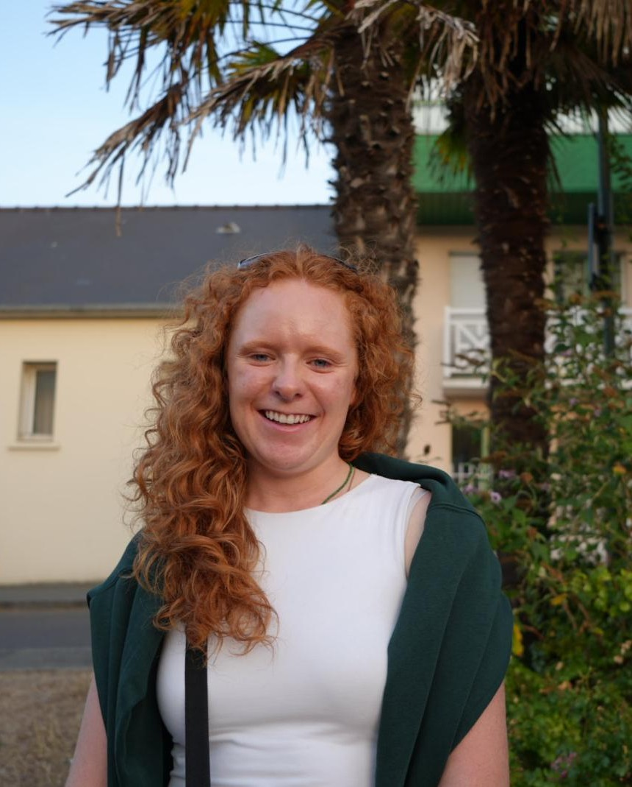

Qui suis-je ?
Je m'appelle Isla et je suis la fondatrice de Words of Joy.
Né au Royaume-Uni, élevée en France et voyageant régulièrement aux USA et en Grande-Bretagne, j'ai la chance de baigner dans ces trois cultures.
Après des études en école d'ingénieur, je travaille actuellement comme ingénieure biomédicale dans un centre de lutte contre le cancer. Words of Joy est un projet liée à ma passion pour les histoires, la lecture et les mots.
J'aime particulièrement trouver les mots justes : ceux qui transmettent non seulement le sens d'un texte, mais aussi son ton, son intention et sa personnalité.
Mon approche
Une bonne traduction ne consiste pas simplement à remplacer chaque mot par son équivalent dans une autre langue. Elle doit être naturelle pour la personne qui la lit.
Mon objectif est donc de produire des textes qui semblent avoir été écrits directement en anglais, tout en restant fidèles au message et à l'identité du contenu original.
Un projet construit de A à Z
Words of Joy est également un projet qui me permet d'explorer différentes facettes de la création numérique et entrepreneuriale.
J'ai notamment conçu et développé ce site moi-même, de sa structure à sa mise en ligne en passant par le codage de chacune des pages !
Travaillons ensemble !
Vous avez un projet de traduction ou souhaitez simplement en discuter ?
hello@wordsofjoy.fr